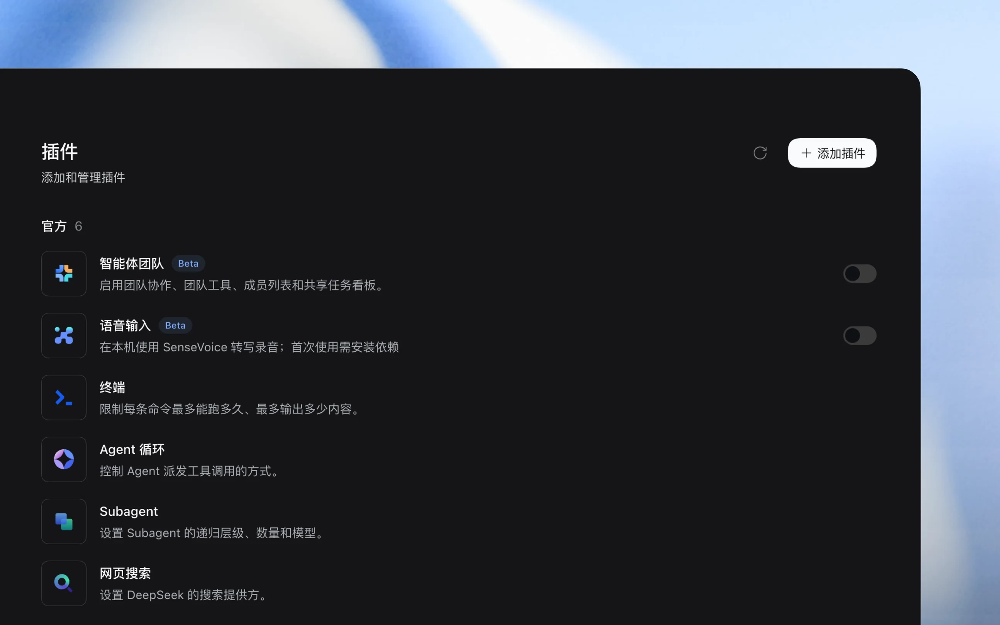

01 / 本地记忆窗口关了，
窗口关了，
进度还在。
习惯、决定和任务进度写进本地工作区。重新打开，从上次的下一步继续。
钥匙也在：每扇门一行账本，值静态编码，门要在你这台机器上开，先由你点一次头。
你的工作区
MEMORY.md习惯与决定
CURRENT.md下一步做什么
✓
记忆已接续换个窗口，继续
给 DeepSeek Harness 装上记忆、技能和内容工作流。
从电脑上的一个想法，到随时接续的出海工作室。
进我的记忆体，看看上次到哪了。
素材已经整理好，今天继续完成第一篇文章。
自媒体出海。把这份笔记写成文章。
保留来源，完成写作配图，把草稿交给你审阅。
云端分身。带上我的工作区。
完成私有仓库与分身配置后，手机上继续出文、出片。
好用的 AI，不该每次从零开始。
iLang 把本地记忆、技能和内容工作流接进 DSH。你定方向，它带着你的习惯和进度，继续把事做完。
记住进度，读懂资料，把好方法留下来。
习惯、决定和任务进度写进本地工作区。重新打开，从上次的下一步继续。
钥匙也在：每扇门一行账本，值静态编码，门要在你这台机器上开，先由你点一次头。
交一篇攻略、一个链接或一张截图，说「变工程书」。下次说「照这本书做」，让 Agent 按步骤推进。
4 个内置技能、7 本工程书，装了工具包就有。三个官方插件从 npm 装，安装前逐项确认。
技能市场的收录顺序就是显示顺序。
了解 DeepSeek Harness
先完成一件作品，再把流程接起来。
整理知识库，形成写作画像，完成文章与配图。你完成登录、授权和审阅，最后决定何时发布。
把一句话或一张图交给 Grok Bot 或 Muse，生成图或视频。每件成品保留请求与验收记录。
Muse 开一台 Railway 免费云服务器。Grok Bot 跑在 xAI 云上，无需另配服务器。
授权后，把工作区放进私有仓库，配置你的 Grok Bot 分身。手机上发口令，成品回到同一个工作区。
按各个平台的规则改写，你点头后各版入队，到点由手发出。
已接入微信公众号、X 和 YouTube。另有 33 个平台在规划中。
微信视频号、
Medium、
给网址，它先读 Google Search Central 当天的官方页，按六个维度逐条判，一页报告每条带证据和官方页地址。改法你点头一条改一条，部署是你做。不批量产页，不做外链，不抓结果页。
查看这本工程书Agent 可用 5 个只读工具查阅 25 项公开资源，包括安装方法、技能和工程书。「变工程书」「出片」「云端分身」「一稿多发」「SEM 与付费投流」「SEO 体检」的公开说明，也在同一套入口里。
Level 5 · Agent-Native公开只读 · 无需账号或 API Key
{
"mcpServers": {
"ilang-dsh": {
"url": "https://dsh.ilang.guide/mcp"
}
}
}适用于支持此格式的远程 MCP 客户端。
“查一下 iLang DSH 的云端分身工程书。”
服务返回公开说明，执行由你的本地 Agent 按授权完成。DeepSeek Harness 是 DeepSeek 的桌面 Agent 工具。iLang DSH 工具包是 iLang 为它提供的开源工具包，接入本地记忆、安装工具、技能和内容工作流。
一台 Windows、macOS 或 Linux 电脑，已安装的 DeepSeek Harness，以及可用的模型账户。新开任务时选择「创造模式」，再粘贴安装指令。连接素材平台、公众号、Grok Bot 等服务时，按流程完成你自己的登录和授权。
工具包按 MIT 协议开源，免费使用。模型调用、服务器和第三方平台服务按你选择的服务结算。
默认是电脑上的本地文件，可以查看、编辑和删除。模型调用会联网；备份和云端分身按你的授权配置，工作区备份使用你自己的私有仓库。
关闭窗口，再打开同一个工作区，说「进我的记忆体，看看上次到哪了。」查看它是否能接续上次的进度，并按安装指引完成验收。
不会。公开 MCP 只读安装说明、文档、技能和工程书，不访问你的电脑或本地记忆。实际安装和发布由你的本地 Agent 根据你的授权执行。